<!doctype html>
<html lang="en">
<head>
  <meta charset="utf-8">
  <meta name="viewport" content="width=device-width,initial-scale=1">
  <title>Open//77 — Pause</title>
  <script src="address-privacy.js"></script>
  <link rel="stylesheet" href="address-privacy.css">
  <!-- The house token file FIRST, always. It is MIRRORED, not shared: each
       WebUI surface runs on its own isolated virtual origin and cannot load a
       stylesheet out of another resource's folder, so this resource ships a
       byte-identical copy. See docs/ui-design-system.md section 3. -->
  <link rel="stylesheet" href="open77-ui.css">
  <!-- The Open//77 Design System tokens, offline transcription mirrored from
       resources/gamemodes/freeroam/web/design-system.css (same reason as above:
       one isolated origin per surface, so the file is copied, not shared). -->
  <link rel="stylesheet" href="design-system.css">
  <link rel="stylesheet" href="app.css">
</head>
<!-- Structure only. Every word on this page comes from shared/strings.lua,
     through `data-t` for a static label and through `PauseText.t` / `.fmt` for
     anything built at runtime — except the words the ENGINE owns: setting
     labels, dropdown option names, device names, key names, server and player
     names. Those arrive already localised and are data, not language. -->
<body>
  <div class="scrim" id="scrim"></div>

  <aside class="panel" role="dialog" aria-modal="true" data-t-label="dialogLabel">
    <header class="mast">
      <span class="mast__crop"></span>
      <span class="server-brand" id="server-brand" hidden></span>
      <span class="mast__chip" data-t="chip"></span>
    </header>

    <section class="session session--offline" id="session" aria-live="polite">
      <div class="session__head">
        <div>
          <span class="session__label"><span class="mark">//</span> <span data-t="session.eyebrow"></span></span>
          <span class="session__name" id="s-name"></span>
        </div>
        <span class="pill" id="s-pill"><i></i><span id="s-pill-text"></span></span>
      </div>
      <dl class="session__grid" id="s-grid"></dl>
      <label class="address-privacy-toggle"><input type="checkbox" data-show-addresses><span data-t="session.showAddresses"></span></label>
      <p class="session__hint" id="s-hint" data-t="session.hint" hidden></p>
    </section>

    <nav class="items" id="items">
      <p class="action-error" id="pause-error" role="alert" hidden></p>
      <button class="item" data-action="resume" style="--delay:40ms"><i></i><span data-t="menu.resume"></span><small data-t="legend.escape"></small></button>
      <button class="item" data-action="map" style="--delay:55ms"><i></i><span data-t="menu.map"></span></button>
      <button class="item" data-action="settings" style="--delay:70ms"><i></i><span data-t="menu.settings"></span></button>
      <div class="rule"></div>
      <button class="item item--danger" id="quit-session" data-action="quit-session" style="--delay:100ms"><i></i><span data-t="menu.quitSession"></span></button>
      <button class="item item--danger" data-action="quit-game" style="--delay:130ms"><i></i><span data-t="menu.quitGame"></span></button>
      <div class="spacer"></div>
    </nav>

    <!-- Settings stretch the panel into two panes: the category rail on the
         left (with the wordmark, since the masthead is hidden here), and the
         content on the right — heading, filter, the scrolling list, the foot. -->
    <section class="settings" id="settings">
      <div class="settings__brand"></div>
      <div class="settings__head">
        <h2 id="settings-title"></h2><span id="settings-note"></span>
      </div>
      <nav class="tabs" id="settings-tabs" data-t-label="settings.categories"></nav>
      <!-- The filter is not decoration. A single tab carries up to forty engine
           variables, and scrolling to find "volumetric" is worse than typing it. -->
      <div class="settings__filter">
        <input type="search" id="settings-filter" autocomplete="off" spellcheck="false"
               data-t-placeholder="settings.filterPlaceholder"
               data-t-label="settings.filterLabel">
      </div>
      <div class="settings__list" id="settings-list"></div>
      <div class="settings__foot">
        <button class="btn" id="settings-back"><span data-t="settings.back"></span> <kbd data-t="legend.escape"></kbd></button>
        <button class="link" id="settings-vanilla" data-t="settings.vanilla" data-t-title="settings.vanillaHint"></button>
      </div>
    </section>

    <div class="confirm" id="confirm">
      <h2 id="confirm-title"></h2>
      <p id="confirm-body"></p>
      <div class="confirm-actions">
        <button class="btn btn--danger" id="confirm-yes" data-t="confirm.yes"></button>
        <button class="btn" id="confirm-no"><span data-t="confirm.no"></span> <kbd data-t="legend.escape"></kbd></button>
      </div>
    </div>

    <footer class="foot">
      <div><span class="key" data-t="legend.escape"></span> <span data-t="legend.close"></span></div>
      <div><span class="key" data-t="legend.updown"></span> <span data-t="legend.navigate"></span></div>
      <div><span class="key" data-t="legend.leftright"></span> <span data-t="legend.adjust"></span></div>
      <div><span class="key" data-t="legend.enter"></span> <span data-t="legend.select"></span></div>
    </footer>
  </aside>

<script src="i18n.js"></script>
<script src="branding.js"></script>
<script>
(function () {
  'use strict';

  var body = document.body;
  var items = document.getElementById('items');
  var confirmPane = document.getElementById('confirm');
  var settingsPane = document.getElementById('settings');
  var settingsList = document.getElementById('settings-list');
  var settingsTabs = document.getElementById('settings-tabs');
  var settingsNote = document.getElementById('settings-note');
  var settingsFilter = document.getElementById('settings-filter');
  var quitSessionButton = document.getElementById('quit-session');
  var pending = null;
  var connected = false;
  var lastState = null;

  Open77.on('privacy:state', function (value) {
    window.Open77AddressPrivacy.setVisible(value && value.visible === true);
  });
  window.addEventListener('address-privacy:request', function (event) {
    Open77.emit('privacy:set', event.detail);
  });

  var T = function (path, fallback) { return window.PauseText.t(path, fallback); };
  var F = function (path, values) { return window.PauseText.fmt(path, values); };

  // Which string names the copy of each destructive confirmation. The text
  // itself is in shared/strings.lua; only the mapping from action to key is a
  // property of this page.
  var CONFIRMATIONS = {
    'quit-session': { title: 'confirm.quitSessionTitle', body: 'confirm.quitSessionBody' },
    'quit-game': { title: 'confirm.quitGameTitle', body: 'confirm.quitGameBody' }
  };

  // Categories come from the host, not from this page: each one is a group of
  // engine settings the Lua side lists, and the page renders whatever arrives.
  var tabs = [];
  var activeTab = null;
  // The sections last received for the active tab, kept so the filter and a
  // focus-preserving redraw can rebuild without another bridge round trip.
  var currentSections = [];
  var currentDone = true;

  // The label of a setting row.
  //
  // `entry.label` is the ENGINE'S own display name, localised, delivered on the
  // `meta:` line of the script bridge. The camel-case split below is only the
  // fallback for a variable whose display name the engine leaves empty; it used
  // to be the primary path, alongside a hand-written English table of twenty
  // names that left every other variable unlabelled in every language.
  function labelFor(entry) {
    if (entry.label) { return String(entry.label); }
    return String(entry.name)
      .replace(/([a-z0-9])([A-Z])/g, '$1 $2')
      .replace(/_/g, ' ');
  }

  // A Float setting travels as a fixed-point integer, because the bridge is
  // int32 end to end; `entry.scale` is the divisor the script used, published on
  // the same `meta:` line. Only display divides — the value written back is the
  // integer the control holds, and the script recomputes the scale from the
  // variable itself.
  function formatValue(entry, raw) {
    var scale = Number(entry.scale) || 1;
    var suffix = String(entry.suffix || '');
    if (scale <= 1) { return raw + suffix; }
    return (raw / scale).toFixed(scale >= 100 ? 2 : 1) + suffix;
  }

  var esc = function (t) {
    return String(t == null ? '' : t).replace(/[&<>"]/g, function (c) {
      return { '&': '&amp;', '<': '&lt;', '>': '&gt;', '"': '&quot;' }[c];
    });
  };

  function pane() {
    if (body.classList.contains('confirming')) { return confirmPane; }
    if (body.classList.contains('settings-open')) { return settingsPane; }
    return items;
  }

  function focusables() {
    return Array.prototype.slice.call(
      pane().querySelectorAll('button:not(:disabled), input:not(:disabled)'))
      .filter(function (element) { return element.offsetParent !== null; });
  }

  // Focus and keep the focused control on screen. The settings list scrolls, and
  // arrow navigation that walks focus off the visible area reads as the list
  // having stopped responding.
  function focusVisible(element) {
    if (!element) { return; }
    element.focus();
    if (settingsList.contains(element)) {
      element.scrollIntoView({ block: 'nearest' });
    }
  }

  // A close can arrive between the two opening animation frames. Likewise,
  // the previous close timer may fire after a new open. Keep both DOM work
  // and the host acknowledgement tied to the transition that scheduled them.
  var visibilityToken = 0;
  var commandGeneration = 0;
  function open(payload) {
    if (payload && Number.isInteger(payload.generation)) commandGeneration = payload.generation;
    var token = ++visibilityToken;
    body.classList.remove('confirming');
    body.classList.remove('settings-open');
    pending = null;
    var error = document.getElementById('pause-error');
    error.textContent = payload && typeof payload.error === 'string' ? payload.error : '';
    error.hidden = !error.textContent;
    requestAnimationFrame(function () {
      if (token !== visibilityToken) return;
      requestAnimationFrame(function () {
        if (token !== visibilityToken) return;
        body.classList.add('open');
        var first = focusables()[0];
        if (first) { first.focus(); }
      });
    });
  }

  function close(payload) {
    if (payload && Number.isInteger(payload.generation)) commandGeneration = payload.generation;
    var token = ++visibilityToken;
    var generation = commandGeneration;
    closeSelect();
    body.classList.remove('open');
    function complete() {
      if (token !== visibilityToken) return;
      body.classList.remove('confirming');
      body.classList.remove('settings-open');
      pending = null;
      Open77.emit('pause:closed', { generation: generation });
    }
    if (payload && payload.immediate === true) complete();
    else setTimeout(complete, 230);
  }

  // ── Session card ─────────────────────────────────────────────────────────

  function cell(label, value, wide) {
    return '<div class="session__cell' + (wide ? ' session__cell--wide' : '') +
      '"><dt>' + esc(label) + '</dt><dd>' + value + '</dd></div>';
  }

  function renderState(state) {
    state = state || lastState || {};
    window.Open77AddressPrivacy.remember(state);
    lastState = state;
    connected = !!state.connected;
    var phase = String(state.phase || 'offline');
    var card = document.getElementById('session');
    var nameEl = document.getElementById('s-name');
    var pill = document.getElementById('s-pill');
    var pillText = document.getElementById('s-pill-text');
    var grid = document.getElementById('s-grid');
    var hint = document.getElementById('s-hint');
    var client = state.client || {};
    var blank = T('session.blank');
    var proto = 'p' + (client.protocolMajor != null ? client.protocolMajor : '?') +
      '.' + (client.protocolMinor != null ? client.protocolMinor : '?');
    var clientCell = '<b>' + esc(client.version || blank) + '</b> <span class="u">· ' +
      esc(proto) + '</span>';

    if (connected) {
      card.classList.remove('session--offline');
      hint.hidden = true;
      nameEl.textContent = state.server || state.endpoint || T('session.connected');
      pill.className = 'pill pill--live';
      pillText.textContent = T('session.live');

      var rows = '';
      var player = state.player || blank;
      rows += cell(T('session.player'), '<b>' + esc(player) + '</b>' +
        (state.playerId ? ' <span class="u">#' + esc(state.playerId) + '</span>' : ''));
      rows += cell(T('session.ping'), '<b>' + esc(state.ping != null ? state.ping : blank) +
        '</b> <span class="u">' + esc(T('session.milliseconds')) + '</span>');
      if (state.players != null) {
        // Capacity comes from the server catalogue and a masterless or
        // direct-connect player has none. Showing the live count alone beats
        // hiding it, and beats inventing a denominator that would read full.
        rows += cell(T('session.players'), '<b>' + esc(state.players) + '</b>' +
          (state.capacity != null
            ? ' <span class="u">/ ' + esc(state.capacity) + '</span>'
            : ''));
      } else {
        rows += cell(T('session.tick'), '<b>' + esc(state.tickRate || blank) +
          '</b> <span class="u">' +
          esc(F('session.tickUnit', { rate: state.snapshotRate || blank })) + '</span>');
      }
      var serverCell = state.serverVersion
        ? '<b>' + esc(state.serverVersion) + '</b>' +
          (state.serverProtocol && state.serverProtocol.major != null
            ? ' <span class="u">· p' + esc(state.serverProtocol.major) + '.' +
              esc(state.serverProtocol.minor) + '</span>'
            : '')
        : '<span class="u">' + esc(blank) + '</span>';
      rows += cell(T('session.serverVersion'), serverCell);
      rows += cell(T('session.endpoint'), '<b>' + esc(state.endpoint || blank) + '</b>', true);
      rows += cell(T('session.client'), clientCell, true);
      grid.innerHTML = rows;
    } else {
      card.classList.add('session--offline');
      var busy = phase !== 'offline' && phase !== 'failed' && phase !== 'rejected' &&
        phase !== 'disconnecting';
      nameEl.textContent = busy
        ? (state.server || state.endpoint || T('session.connecting'))
        : T('session.none');
      pill.className = busy ? 'pill pill--busy' : 'pill';
      // The phase is a wire identifier, not a translated word: it is shown as
      // itself when it is not the offline one the table names.
      pillText.textContent = phase === 'offline'
        ? T('session.offline') : phase.toUpperCase();
      grid.innerHTML = cell(T('session.client'), clientCell, true);
      hint.hidden = busy;
    }

    quitSessionButton.disabled = !connected;
  }

  // ── Confirmations ────────────────────────────────────────────────────────

  function ask(action) {
    var copy = CONFIRMATIONS[action];
    if (!copy) { return; }
    pending = action;
    document.getElementById('confirm-title').textContent = T(copy.title);
    document.getElementById('confirm-body').textContent = T(copy.body);
    body.classList.add('confirming');
    document.getElementById('confirm-no').focus();
  }

  function cancelConfirm() {
    body.classList.remove('confirming');
    pending = null;
    var first = focusables()[0];
    if (first) { first.focus(); }
  }

  // ── Settings ─────────────────────────────────────────────────────────────

  function tabLabel(tab) {
    return T('tabs.' + tab.id, String(tab.id).toUpperCase());
  }

  function renderTabs() {
    settingsTabs.innerHTML = '';
    tabs.forEach(function (tab) {
      var button = document.createElement('button');
      button.className = 'tab' + (tab.id === activeTab ? ' tab--active' : '');
      button.textContent = tabLabel(tab);
      button.setAttribute('aria-pressed', tab.id === activeTab ? 'true' : 'false');
      if (tab.enabled === false) {
        button.disabled = true;
      } else {
        button.addEventListener('click', function () { selectTab(tab.id); });
      }
      settingsTabs.appendChild(button);
    });
  }

  function currentTab() {
    for (var i = 0; i < tabs.length; i += 1) {
      if (tabs[i].id === activeTab) { return tabs[i]; }
    }
    return null;
  }

  function selectTab(id) {
    closeSelect();
    activeTab = id;
    var tab = currentTab();
    var word = tab ? tabLabel(tab) : T('settings.title');
    document.getElementById('settings-title').textContent = word;
    settingsNote.textContent = '';
    settingsFilter.value = '';
    currentSections = [];
    currentDone = false;
    settingsList.innerHTML = '<p class="empty">' + esc(T('settings.loading')) + '</p>';
    renderTabs();
    Open77.emit('settings:open', { tab: id });
  }

  function apply(group, name, value) {
    Open77.emit('settings:set', { group: group, name: name, value: value });
  }

  // The engine decides some options for itself while the panel is open: turning
  // ray tracing off disables its five sub-options, and picking an upscaler
  // enables its sharpness slider. Nothing pushes that back, so a toggle or a
  // dropdown asks for a fresh read — debounced, because a player walking a list
  // with the arrow keys would otherwise re-read on every step.
  var refreshTimer = null;
  function scheduleRefresh() {
    window.clearTimeout(refreshTimer);
    refreshTimer = window.setTimeout(function () {
      if (!body.classList.contains('settings-open') || !activeTab) { return; }
      if (openSelect || capturingKeybind) { return; }
      Open77.emit('settings:open', { tab: activeTab });
    }, 700);
  }

  // ── Row tags ─────────────────────────────────────────────────────────────
  //
  // Everything here answers the same question — "I changed it and nothing
  // happened" — with the engine's own answer rather than a guess. `policy` is
  // `InGameConfigVarUpdatePolicy` and `visible` / `disabled` / `inGame` are the
  // engine's own predicates, all carried on the `meta:` line.
  //
  // Capped at two: a 464px drawer has room for a warning, not for a paragraph.
  function tagsFor(entry) {
    var tags = [];
    if (entry.type === 'list' && (entry.options || []).length < 2) {
      tags.push(['unavailable', 'quiet']);
    }
    if (entry.disabled) { tags.push(['locked', 'quiet']); }
    if (entry.policy === 'restart') { tags.push(['restart', 'warn']); }
    if (entry.policy === 'checkpoint') { tags.push(['checkpoint', 'warn']); }
    if (entry.inGame === false) { tags.push(['menuOnly', 'warn']); }
    if (entry.visible === false) { tags.push(['hidden', 'quiet']); }
    return tags.slice(0, 2);
  }

  function appendTags(row, entry) {
    var tags = tagsFor(entry);
    if (!tags.length) { return; }
    var strip = document.createElement('div');
    strip.className = 'row__tags';
    tags.forEach(function (pair) {
      var tag = document.createElement('span');
      tag.className = 'tag tag--' + pair[1];
      tag.textContent = T('tag.' + pair[0]);
      tag.title = T('tag.' + pair[0] + 'Hint');
      strip.appendChild(tag);
    });
    row.appendChild(strip);
  }

  // Every row is built through this so the shared parts — the search key the
  // filter reads, the sub-option indent, the locked state — exist exactly once.
  function makeRow(entry, extraClass) {
    var row = document.createElement('div');
    row.className = 'row' + (extraClass ? ' ' + extraClass : '') +
      (entry.sub ? ' row--sub' : '') + (entry.disabled ? ' row--locked' : '');
    row.dataset.setting = entry.name;
    row.dataset.search = (labelFor(entry) + ' ' + entry.name).toLowerCase();
    return row;
  }

  // A stable identity for one control, so a redraw can put the caret back where
  // it was. Progressive loading redraws the list once per engine group, and a
  // refresh redraws it again after a toggle; neither may cost the player their
  // place.
  function focusKey(group, name, role) {
    return group + '|' + name + '|' + role;
  }

  function intRow(group, entry) {
    var row = makeRow(entry);
    var head = document.createElement('div');
    head.className = 'row__head';
    var label = document.createElement('label');
    label.textContent = labelFor(entry);
    var readout = document.createElement('b');
    readout.textContent = formatValue(entry, entry.value);
    head.appendChild(label);
    head.appendChild(readout);

    var slider = document.createElement('input');
    slider.type = 'range';
    slider.min = entry.min;
    slider.max = entry.max;
    slider.step = entry.step;
    slider.value = entry.value;
    slider.disabled = !!entry.disabled;
    slider.dataset.focus = focusKey(group, entry.name, 'slider');
    slider.setAttribute('aria-label', label.textContent);

    // The track paints its filled part from --pct (see app.css); keep it equal
    // to the thumb position so the well shows how much, not only where.
    var paintFill = function () {
      var span = Number(slider.max) - Number(slider.min);
      var pct = span > 0 ? ((Number(slider.value) - Number(slider.min)) / span) * 100 : 0;
      slider.style.setProperty('--pct', Math.max(0, Math.min(100, pct)).toFixed(2) + '%');
    };
    paintFill();

    // Applied on every move, and shown immediately rather than waiting for the
    // engine to answer: the bridge only polls five times a second, so a readout
    // that waited would lag visibly behind the thumb.
    slider.addEventListener('input', function () {
      paintFill();
      readout.textContent = formatValue(entry, Number(slider.value));
      apply(group, entry.name, Number(slider.value));
    });

    row.appendChild(head);
    row.appendChild(slider);
    appendTags(row, entry);
    return row;
  }

  function boolRow(group, entry) {
    var row = makeRow(entry);
    var head = document.createElement('div');
    head.className = 'row__head';
    var label = document.createElement('label');
    label.textContent = labelFor(entry);
    head.appendChild(label);

    var state = Number(entry.value) === 1;
    var toggle = document.createElement('button');
    toggle.className = 'toggle' + (state ? ' toggle--on' : '');
    toggle.setAttribute('role', 'switch');
    toggle.setAttribute('aria-label', label.textContent);
    toggle.disabled = !!entry.disabled;
    toggle.dataset.focus = focusKey(group, entry.name, 'toggle');
    var mark = document.createElement('i');
    var text = document.createElement('span');
    text.textContent = state ? T('settings.on') : T('settings.off');
    toggle.appendChild(mark);
    toggle.appendChild(text);
    toggle.setAttribute('aria-checked', state ? 'true' : 'false');

    var set = function (next) {
      state = next;
      toggle.classList.toggle('toggle--on', state);
      toggle.setAttribute('aria-checked', state ? 'true' : 'false');
      text.textContent = state ? T('settings.on') : T('settings.off');
      apply(group, entry.name, state ? 1 : 0);
      if (group.charAt(0) === '/') { scheduleRefresh(); }
    };
    toggle.addEventListener('click', function () { set(!state); });
    toggle.addEventListener('keydown', function (event) {
      if (event.key === 'ArrowLeft') { event.preventDefault(); if (state) { set(false); } }
      if (event.key === 'ArrowRight') { event.preventDefault(); if (!state) { set(true); } }
    });

    head.appendChild(toggle);
    row.appendChild(head);
    appendTags(row, entry);
    return row;
  }

  // ── List setting: arrows for a nudge, dropdown for a jump ────────────────
  //
  // The whole option list already reaches this page: the REDscript side emits
  // `list:<index>:<opt>|<opt>|…` (Open77ScriptBridge.reds, Open77BridgeListVars)
  // and the native parser splits it into `entry.options`
  // (client/src/api/ScriptBridge.cpp, ParseSettingLine). Stepping one entry at a
  // time was never a data limit, only a rendering one — and screen resolutions
  // run to dozens of entries, which made finding one interminable.

  var openSelect = null;   // at most one dropdown is open at a time
  var selectUid = 0;

  function closeSelect() {
    if (openSelect) { openSelect.close(); }
  }

  function listRow(group, entry) {
    var row = makeRow(entry);
    var head = document.createElement('div');
    head.className = 'row__head';
    var label = document.createElement('label');
    label.textContent = labelFor(entry);
    head.appendChild(label);
    row.appendChild(head);

    var options = entry.options || [];
    var locked = !!entry.disabled;
    var index = Math.max(0, Math.min(Number(entry.value) || 0, options.length - 1));
    var rowId = ++selectUid;

    var control = document.createElement('div');
    control.className = 'list-ctl';
    var previous = document.createElement('button');
    previous.className = 'list-ctl__step';
    previous.textContent = '‹';
    previous.setAttribute('aria-label', F('settings.previous', { name: label.textContent }));
    var value = document.createElement('button');
    value.className = 'list-ctl__value';
    value.setAttribute('aria-haspopup', 'listbox');
    value.setAttribute('aria-expanded', 'false');
    value.dataset.focus = focusKey(group, entry.name, 'list');
    var valueText = document.createElement('span');
    var caret = document.createElement('i');
    caret.textContent = '▾';
    value.appendChild(valueText);
    value.appendChild(caret);
    var next = document.createElement('button');
    next.className = 'list-ctl__step';
    next.textContent = '›';
    next.setAttribute('aria-label', F('settings.next', { name: label.textContent }));

    var render = function () {
      valueText.textContent = options.length ? options[index] : T('settings.blank');
      value.setAttribute('aria-label', label.textContent + ': ' + valueText.textContent);
      previous.disabled = locked || index <= 0;
      next.disabled = locked || index >= options.length - 1;
      // A one-entry list has nothing to pick from; leaving the trigger enabled
      // would only add a focus stop that opens an empty menu.
      value.disabled = locked || options.length < 2;
    };
    var commit = function (target) {
      if (locked) { return; }
      if (target < 0 || target > options.length - 1 || target === index) { return; }
      index = target;
      render();
      apply(group, entry.name, index);
      if (group.charAt(0) === '/') { scheduleRefresh(); }
    };
    var step = function (delta) { commit(index + delta); };

    previous.addEventListener('click', function () { closeSelect(); step(-1); });
    next.addEventListener('click', function () { closeSelect(); step(1); });

    var menu = null;

    // The dropdown is parented to <body> and fixed-positioned, for two reasons
    // that both bite: `.settings__list` scrolls, so it would clip an absolutely
    // positioned popup; and `.panel` carries a transform, which would make
    // `fixed` resolve against the panel instead of the viewport.
    function openMenu() {
      closeSelect();
      if (locked || options.length < 2) { return; }

      var pop = document.createElement('div');
      pop.className = 'select-pop';
      pop.setAttribute('role', 'listbox');
      pop.setAttribute('aria-label', label.textContent);

      var find = document.createElement('div');
      find.className = 'select-pop__find';
      find.hidden = true;
      var scroll = document.createElement('div');
      scroll.className = 'select-pop__scroll';

      var active = index;
      var buttons = options.map(function (text, i) {
        var opt = document.createElement('button');
        opt.type = 'button';
        opt.id = 'op77-opt-' + rowId + '-' + i;
        opt.className = 'select-pop__opt' +
          (i === index ? ' select-pop__opt--current' : '');
        opt.setAttribute('role', 'option');
        var span = document.createElement('span');
        span.textContent = text;
        opt.appendChild(span);
        // Keep the caret on the trigger: the menu is driven by
        // aria-activedescendant, so focus never leaves the settings pane and the
        // panel's own up/down navigation is left alone.
        opt.addEventListener('mousedown', function (event) { event.preventDefault(); });
        opt.addEventListener('mousemove', function () { setActive(i, false); });
        opt.addEventListener('click', function () { commit(i); close(); });
        scroll.appendChild(opt);
        return opt;
      });

      function setActive(target, reveal) {
        active = Math.max(0, Math.min(target, options.length - 1));
        for (var i = 0; i < buttons.length; i += 1) {
          buttons[i].classList.toggle('select-pop__opt--active', i === active);
          buttons[i].setAttribute('aria-selected', i === active ? 'true' : 'false');
        }
        value.setAttribute('aria-activedescendant', buttons[active].id);
        if (reveal === false) { return; }
        // Scrolled by hand rather than with scrollIntoView, which would also
        // scroll the settings list behind the popup.
        var button = buttons[active];
        if (button.offsetTop < scroll.scrollTop) {
          scroll.scrollTop = button.offsetTop;
        } else if (button.offsetTop + button.offsetHeight >
                   scroll.scrollTop + scroll.clientHeight) {
          scroll.scrollTop = button.offsetTop + button.offsetHeight - scroll.clientHeight;
        }
      }

      function position() {
        var rect = value.getBoundingClientRect();
        var gap = 4;
        var below = window.innerHeight - rect.bottom - gap - 8;
        var above = rect.top - gap - 8;
        var up = below < 168 && above > below;
        pop.style.left = Math.round(rect.left) + 'px';
        pop.style.width = Math.round(rect.width) + 'px';
        pop.style.maxHeight =
          Math.round(Math.max(120, Math.min(300, up ? above : below))) + 'px';
        if (up) {
          pop.style.top = 'auto';
          pop.style.bottom = Math.round(window.innerHeight - rect.top + gap) + 'px';
        } else {
          pop.style.bottom = 'auto';
          pop.style.top = Math.round(rect.bottom + gap) + 'px';
        }
      }

      // Type-to-find. Prefix first, then substring, so "1920" lands on
      // 1920x1080 and a partial word still finds a mode that only contains it.
      var query = '';
      var queryTimer = null;
      function typeAhead(character) {
        query += character.toLowerCase();
        window.clearTimeout(queryTimer);
        queryTimer = window.setTimeout(function () {
          query = '';
          find.hidden = true;
        }, 1100);
        var hit = -1;
        var i;
        for (i = 0; i < options.length && hit < 0; i += 1) {
          if (String(options[i]).toLowerCase().indexOf(query) === 0) { hit = i; }
        }
        for (i = 0; i < options.length && hit < 0; i += 1) {
          if (String(options[i]).toLowerCase().indexOf(query) >= 0) { hit = i; }
        }
        find.hidden = false;
        find.innerHTML = esc(T('settings.find')) + ' <b>' + esc(query) + '</b>' +
          (hit < 0 ? ' — ' + esc(T('settings.findNoMatch')) : '');
        if (hit >= 0) { setActive(hit); }
      }

      function onOutside(event) {
        if (pop.contains(event.target) || value.contains(event.target)) { return; }
        // Swallow the dismissing click the way a native select does: the first
        // click outside closes the menu and does nothing else. Without this it
        // would also reach the scrim, which resumes the game.
        event.preventDefault();
        event.stopPropagation();
        document.addEventListener('click', function swallow(click) {
          click.preventDefault();
          click.stopPropagation();
          document.removeEventListener('click', swallow, true);
        }, true);
        close();
      }

      function close() {
        if (menu !== handle) { return; }
        menu = null;
        openSelect = null;
        window.clearTimeout(queryTimer);
        document.removeEventListener('mousedown', onOutside, true);
        window.removeEventListener('resize', position);
        settingsList.removeEventListener('scroll', close);
        if (pop.parentNode) { pop.parentNode.removeChild(pop); }
        value.setAttribute('aria-expanded', 'false');
        value.removeAttribute('aria-activedescendant');
        if (document.body.contains(value)) { value.focus(); }
      }

      var handle = { trigger: value, close: close };
      pop.appendChild(find);
      pop.appendChild(scroll);
      document.body.appendChild(pop);
      menu = handle;
      openSelect = handle;
      value.setAttribute('aria-expanded', 'true');
      position();
      setActive(index);
      value.focus();
      document.addEventListener('mousedown', onOutside, true);
      window.addEventListener('resize', position);
      settingsList.addEventListener('scroll', close);

      handle.key = function (event) {
        var key = event.key;
        if (typeof key !== 'string') { return; }
        var stop = function () { event.preventDefault(); event.stopPropagation(); };
        if (key === 'Escape') { stop(); close(); return; }
        if (key === 'Tab') { close(); return; }
        // Arrows only move the highlight; the value is written on Enter. Live
        // previewing would fire a real mode switch per keystroke, which for
        // Resolution means the engine rebuilding its swap chain each time.
        if (key === 'Enter' || key === ' ' || key === 'Spacebar') {
          stop(); commit(active); close(); return;
        }
        if (key === 'ArrowDown') { stop(); setActive(active + 1); return; }
        if (key === 'ArrowUp') { stop(); setActive(active - 1); return; }
        if (key === 'Home') { stop(); setActive(0); return; }
        if (key === 'End') { stop(); setActive(options.length - 1); return; }
        if (key === 'PageDown') { stop(); setActive(active + 8); return; }
        if (key === 'PageUp') { stop(); setActive(active - 8); return; }
        if (key === 'ArrowLeft' || key === 'ArrowRight') { stop(); return; }
        if (key.length === 1 && !event.ctrlKey && !event.altKey && !event.metaKey) {
          stop(); typeAhead(key);
        }
      };
    }

    // One listener, two modes. While the menu is open every key it understands
    // is stopped here, so neither the row's own left/right stepping nor the
    // panel's document-level Escape and up/down navigation sees it.
    value.addEventListener('keydown', function (event) {
      if (menu) { menu.key(event); return; }
      if (event.key === 'ArrowDown' && event.altKey) {
        event.preventDefault();
        event.stopPropagation();
        openMenu();
      }
    });
    value.addEventListener('click', function () {
      if (menu) { closeSelect(); return; }
      openMenu();
    });
    control.addEventListener('keydown', function (event) {
      if (event.key === 'ArrowLeft') { event.preventDefault(); step(-1); }
      if (event.key === 'ArrowRight') { event.preventDefault(); step(1); }
    });

    render();
    control.appendChild(previous);
    control.appendChild(value);
    control.appendChild(next);
    row.appendChild(control);
    appendTags(row, entry);
    return row;
  }

  var capturingKeybind = null;

  function keyName(event) {
    // Match the native logical-key registry, not the US physical KeyQ/KeyA
    // labels. In particular CEF can omit `code` for the AZERTY number row.
    var key = String(event.key || '');
    if (/^[A-Za-z0-9]$/.test(key)) { return key.toUpperCase(); }
    if (key.length === 1 && '&é"\'(-è_çà)=+[]{};:,./\\`~!?@#$%^*<>|ù²'.indexOf(key) !== -1) {
      return key;
    }
    var code = String(event.code || '');
    if (/^Key[A-Z]$/.test(code)) { return code.slice(3); }
    if (/^Digit[0-9]$/.test(code)) { return code.slice(5); }
    if (/^F([1-9]|1[0-2])$/.test(code)) { return code; }
    var codeNames = {
      Space: 'SPACE', Enter: 'ENTER', Tab: 'TAB', ShiftLeft: 'SHIFT',
      ShiftRight: 'SHIFT', ControlLeft: 'CTRL', ControlRight: 'CTRL',
      AltLeft: 'ALT', AltRight: 'ALT', CapsLock: 'CAPSLOCK',
      Backspace: 'BACKSPACE', Insert: 'INSERT', Delete: 'DELETE',
      Home: 'HOME', End: 'END', PageUp: 'PAGEUP', PageDown: 'PAGEDOWN',
      ArrowUp: 'UP', ArrowDown: 'DOWN', ArrowLeft: 'LEFT', ArrowRight: 'RIGHT'
    };
    if (codeNames[code]) { return codeNames[code]; }

    // CEF's synthetic keyboard path does not consistently populate `code`.
    // `key` still carries the logical value, so keep both paths equivalent.
    if (/^[A-Za-z0-9]$/.test(key)) { return key.toUpperCase(); }
    if (/^F([1-9]|1[0-2])$/i.test(key)) { return key.toUpperCase(); }
    var keyNames = {
      ' ': 'SPACE', Spacebar: 'SPACE', Enter: 'ENTER', Return: 'ENTER',
      Tab: 'TAB', Shift: 'SHIFT', Control: 'CTRL', Alt: 'ALT',
      CapsLock: 'CAPSLOCK', Backspace: 'BACKSPACE', Insert: 'INSERT',
      Delete: 'DELETE', Home: 'HOME', End: 'END', PageUp: 'PAGEUP',
      PageDown: 'PAGEDOWN', ArrowUp: 'UP', ArrowDown: 'DOWN',
      ArrowLeft: 'LEFT', ArrowRight: 'RIGHT'
    };
    return keyNames[key] || null;
  }

  function keybindRow(group, entry) {
    var row = makeRow(entry, 'row--keybind');
    var head = document.createElement('div');
    head.className = 'row__head';
    var label = document.createElement('label');
    // A registered mapping carries its own human name — the one the resource
    // that owns the action gave it, which is data, not a translatable label.
    label.textContent = labelFor(entry);
    var button = document.createElement('button');
    button.className = 'keybind';
    button.dataset.focus = focusKey(group, entry.name, 'keybind');
    button.textContent = String(entry.value || T('settings.blank'));
    button.addEventListener('click', function () {
      if (capturingKeybind && capturingKeybind.button !== button) {
        capturingKeybind.button.classList.remove('keybind--capture');
        capturingKeybind.button.textContent = capturingKeybind.value;
      }
      capturingKeybind = {
        group: group, name: entry.name, button: button,
        value: button.textContent
      };
      button.classList.add('keybind--capture');
      button.textContent = T('keybind.press');
    });
    head.appendChild(label);

    // A rebound mapping can be reset to what the resource asked for. The
    // sentinel value is understood by the host's keybinds branch. Engine
    // settings (no `default`) never show the control.
    if (entry.default != null) {
      var controls = document.createElement('div');
      controls.className = 'keybind-ctl';
      var reset = document.createElement('button');
      reset.className = 'keybind-reset';
      reset.textContent = '↺';
      reset.title = F('keybind.resetTitle', { key: String(entry.default) });
      reset.setAttribute('aria-label',
        F('keybind.resetLabel', { name: label.textContent }));
      reset.disabled = entry.rebound !== true;
      reset.dataset.focus = focusKey(group, entry.name, 'reset');
      reset.addEventListener('click', function (event) {
        event.stopPropagation();
        apply(group, entry.name, '__default__');
      });
      controls.appendChild(reset);
      controls.appendChild(button);
      head.appendChild(controls);
    } else {
      head.appendChild(button);
    }
    row.appendChild(head);
    return row;
  }

  function meterRow(group, entry) {
    var row = makeRow(entry, 'row--meter');
    row.setAttribute('data-meter', entry.name);
    var head = document.createElement('div');
    head.className = 'row__head';
    var label = document.createElement('label');
    label.textContent = labelFor(entry);
    var readout = document.createElement('b');
    readout.className = 'meter__value';
    readout.textContent = Number(entry.value || 0) + String(entry.suffix || '');
    head.appendChild(label);
    head.appendChild(readout);
    var track = document.createElement('div');
    track.className = 'meter';
    var fill = document.createElement('i');
    fill.style.width = Math.max(0, Math.min(100, Number(entry.value) || 0)) + '%';
    track.appendChild(fill);
    if (entry.threshold != null) {
      var threshold = document.createElement('span');
      threshold.className = 'meter__threshold';
      threshold.style.left = Math.max(0, Math.min(100, Number(entry.threshold) || 0)) + '%';
      threshold.title = T('voice.thresholdMarker');
      track.appendChild(threshold);
    }
    row.appendChild(head);
    row.appendChild(track);
    return row;
  }

  function infoRow(entry) {
    var row = makeRow(entry, 'row--info');
    var head = document.createElement('div');
    head.className = 'row__head';
    var label = document.createElement('label');
    label.textContent = labelFor(entry);
    var value = document.createElement('b');
    value.textContent = String(entry.value || T('settings.blank'));
    head.appendChild(label);
    head.appendChild(value);
    row.appendChild(head);
    return row;
  }

  // ── Filter ───────────────────────────────────────────────────────────────
  //
  // Rows are hidden rather than removed, and hidden by `hidden` rather than by
  // rebuilding: a rebuild on every keystroke would drop the caret out of the
  // field it was typed into.
  function applyFilter() {
    var query = settingsFilter.value.trim().toLowerCase();
    var anyVisible = false;
    var blocks = settingsList.querySelectorAll('.section');
    for (var b = 0; b < blocks.length; b += 1) {
      var block = blocks[b];
      var rows = block.querySelectorAll('.row');
      var shown = 0;
      for (var r = 0; r < rows.length; r += 1) {
        var hit = !query || (rows[r].dataset.search || '').indexOf(query) >= 0;
        rows[r].hidden = !hit;
        if (hit) { shown += 1; }
      }
      block.hidden = shown === 0;
      if (shown) { anyVisible = true; }
    }
    var empty = settingsList.querySelector('.empty--filter');
    if (query && !anyVisible && blocks.length) {
      if (!empty) {
        empty = document.createElement('p');
        empty.className = 'empty empty--filter';
        settingsList.appendChild(empty);
      }
      empty.textContent = F('settings.noMatch', { query: settingsFilter.value.trim() });
    } else if (empty) {
      empty.parentNode.removeChild(empty);
    }
  }

  function renderSettings(payload) {
    if (payload) {
      if (payload.tab !== activeTab) { return; }
      currentSections = payload.sections || [];
      currentDone = payload.done !== false;
    }
    // Any open dropdown is anchored to a trigger this call is about to discard,
    // so it must go with it rather than float over the rebuilt list.
    closeSelect();

    // A redraw must not cost the player their place: the list is rebuilt once
    // per engine group while a tab loads, and again after a toggle that may
    // have changed what the engine allows.
    var focused = document.activeElement;
    var restoreKey = focused && settingsList.contains(focused)
      ? focused.dataset.focus : null;
    var scrollTop = settingsList.scrollTop;

    settingsList.innerHTML = '';
    var rendered = 0;

    currentSections.forEach(function (section) {
      var entries = (section.entries || []).filter(function (entry) {
        return entry && (entry.type === 'int' || entry.type === 'bool' ||
          entry.type === 'list' || entry.type === 'keybind' ||
          entry.type === 'meter' || entry.type === 'info');
      });
      if (!entries.length) { return; }

      var block = document.createElement('div');
      block.className = 'section';
      var title = document.createElement('div');
      title.className = 'section__title';
      // The heading is a key into the string table, chosen by the tab that
      // asked for the group. The group PATH is a routing detail and used to be
      // what this printed.
      title.innerHTML = '<span>//</span> ' +
        esc(T('groups.' + section.title, section.group));
      block.appendChild(title);
      entries.forEach(function (entry) {
        if (entry.type === 'info') { block.appendChild(infoRow(entry)); }
        else if (entry.type === 'keybind') { block.appendChild(keybindRow(section.group, entry)); }
        else if (entry.type === 'bool') { block.appendChild(boolRow(section.group, entry)); }
        else if (entry.type === 'list') { block.appendChild(listRow(section.group, entry)); }
        else if (entry.type === 'meter') { block.appendChild(meterRow(section.group, entry)); }
        else { block.appendChild(intRow(section.group, entry)); }
        rendered += 1;
      });
      settingsList.appendChild(block);
    });

    if (!currentDone) {
      // The host sends one group at a time — each is a bridge round trip — so
      // the list fills in rather than staying blank, and says it is not finished.
      var loading = document.createElement('p');
      loading.className = 'empty empty--loading';
      loading.textContent = T('settings.loading');
      settingsList.appendChild(loading);
    } else if (!rendered) {
      var empty = document.createElement('p');
      empty.className = 'empty';
      empty.textContent = T('settings.empty');
      settingsList.appendChild(empty);
    }

    applyFilter();
    settingsList.scrollTop = scrollTop;
    if (restoreKey) {
      var again = settingsList.querySelector('[data-focus="' +
        restoreKey.replace(/"/g, '\\"') + '"]');
      if (again && !again.disabled) { again.focus(); }
    }
  }

  function openSettings() {
    body.classList.add('settings-open');
    if (!tabs.length) {
      currentSections = [];
      currentDone = true;
      settingsList.innerHTML = '<p class="empty">' + esc(T('settings.noCategories')) + '</p>';
      return;
    }
    selectTab(activeTab || tabs[0].id);
    var first = settingsTabs.querySelector('button:not(:disabled)');
    if (first) { first.focus(); }
  }

  function closeSettings() {
    closeSelect();
    window.clearTimeout(refreshTimer);
    body.classList.remove('settings-open');
    Open77.emit('settings:closed', {});
    var first = focusables()[0];
    if (first) { first.focus(); }
  }

  // ── Wiring ───────────────────────────────────────────────────────────────

  function run(action) {
    if (action === 'resume') { close(); return; }
    if (action === 'map') { Open77.emit('pause:action', { action: 'map' }); return; }
    if (action === 'settings') { openSettings(); return; }
    if (CONFIRMATIONS[action]) { ask(action); }
  }

  items.addEventListener('click', function (event) {
    var button = event.target.closest('[data-action]');
    if (button && !button.disabled) { run(button.getAttribute('data-action')); }
  });

  document.getElementById('settings-back').addEventListener('click', closeSettings);
  document.getElementById('settings-vanilla').addEventListener('click', function () {
    Open77.emit('pause:vanilla-settings', {});
  });
  document.getElementById('scrim').addEventListener('click', close);
  document.getElementById('confirm-no').addEventListener('click', cancelConfirm);
  document.getElementById('confirm-yes').addEventListener('click', function () {
    if (!pending) { return; }
    Open77.emit('pause:action', { action: pending });
    pending = null;
    body.classList.remove('confirming');
  });
  settingsFilter.addEventListener('input', applyFilter);

  document.addEventListener('keydown', function (event) {
    if (capturingKeybind) {
      event.preventDefault();
      event.stopPropagation();
      if (event.key === 'Escape') {
        capturingKeybind.button.textContent = capturingKeybind.value;
      } else {
        var captured = keyName(event);
        if (!captured) { return; }
        capturingKeybind.button.textContent = captured;
        apply(capturingKeybind.group, capturingKeybind.name, captured);
      }
      capturingKeybind.button.classList.remove('keybind--capture');
      capturingKeybind = null;
      return;
    }
    if (event.key === 'Escape') {
      event.preventDefault();
      // Escape backs out one layer at a time: a confirmation first, then an
      // active filter, then the settings pane, and only then the whole menu.
      if (body.classList.contains('confirming')) { cancelConfirm(); return; }
      if (body.classList.contains('settings-open')) {
        if (settingsFilter.value !== '') {
          settingsFilter.value = '';
          applyFilter();
          settingsFilter.focus();
          return;
        }
        closeSettings();
        return;
      }
      close();
      return;
    }

    var list = focusables();
    if (!list.length) { return; }
    var index = list.indexOf(document.activeElement);

    if (event.key === 'ArrowUp' || event.key === 'ArrowDown') {
      event.preventDefault();
      var step = event.key === 'ArrowDown' ? 1 : -1;
      focusVisible(list[(index + step + list.length) % list.length]);
      return;
    }

    // Home / End / PageUp / PageDown only make sense on a long settings list,
    // and must not fight the caret when the filter field has focus.
    var typing = document.activeElement === settingsFilter;
    if (typing || !body.classList.contains('settings-open')) { return; }
    var jump = null;
    if (event.key === 'Home') { jump = 0; }
    else if (event.key === 'End') { jump = list.length - 1; }
    else if (event.key === 'PageDown') { jump = Math.min(list.length - 1, (index < 0 ? 0 : index) + 8); }
    else if (event.key === 'PageUp') { jump = Math.max(0, (index < 0 ? 0 : index) - 8); }
    if (jump === null) { return; }
    event.preventDefault();
    focusVisible(list[jump]);
  });

  // The string table lands before anything that depends on it — the host sends
  // it first on `pause:ready` — and re-paints whatever is already on screen.
  Open77.on('pause:strings', function (payload) {
    window.PauseText.set(payload);
    renderState(null);
    renderTabs();
    if (currentSections.length) { renderSettings(null); }
  });
  Open77.on('settings:tabs', function (payload) {
    tabs = (payload && payload.tabs) || [];
    if (!activeTab && tabs.length) { activeTab = tabs[0].id; }
    renderTabs();
  });
  Open77.on('settings:values', renderSettings);
  Open77.on('voice:levels', function (payload) {
    var update = function (name, raw, active) {
      var row = settingsList.querySelector('[data-meter="' + name + '"]');
      if (!row) { return; }
      var level = Math.max(0, Math.min(100, Number(raw) || 0));
      row.querySelector('.meter__value').textContent = Math.round(level) + '%';
      row.querySelector('.meter i').style.width = level + '%';
      row.classList.toggle('row--active', !!active);
    };
    update('InputLevel', payload && payload.input, payload && payload.talking);
    update('OutputLevel', payload && payload.output,
      Number(payload && payload.output) > 0.5);
    var updateInfo = function (name, value) {
      var row = settingsList.querySelector('[data-setting="' + name + '"]');
      var readout = row && row.querySelector('.row__head b');
      if (readout) { readout.textContent = String(value || T('settings.blank')); }
    };
    updateInfo('TransmitMode', payload && payload.mode);
    updateInfo('TransmitState', payload && payload.state);
    if (payload && payload.proximity != null) {
      updateInfo('VoiceReach', F('voice.reachValue',
        { metres: Math.round(Number(payload.proximity) || 0) }));
    }
    var inputThreshold = settingsList.querySelector(
      '[data-meter="InputLevel"] .meter__threshold');
    if (inputThreshold && payload && payload.threshold != null) {
      inputThreshold.style.left = Math.max(0,
        Math.min(100, Number(payload.threshold) || 0)) + '%';
    }
  });
  Open77.on('voice:feedback', function (payload) {
    settingsNote.textContent = String(payload && payload.message || '');
    settingsNote.classList.toggle('settings-note--ok', !!(payload && payload.ok));
    settingsNote.classList.toggle('settings-note--error', !(payload && payload.ok));
  });
  Open77.on('pause:open', open);
  Open77.on('pause:close', close);
  Open77.on('pause:state', renderState);

  renderState(null);

  // Resource-specific signal first, then the built-in handshake — the order the
  // server shell uses, and what makes the host send `pause:strings` and
  // `pause:state`.
  Open77.emit('pause:ready', {});
  Open77.ready();
})();
</script>
</body>
</html>
